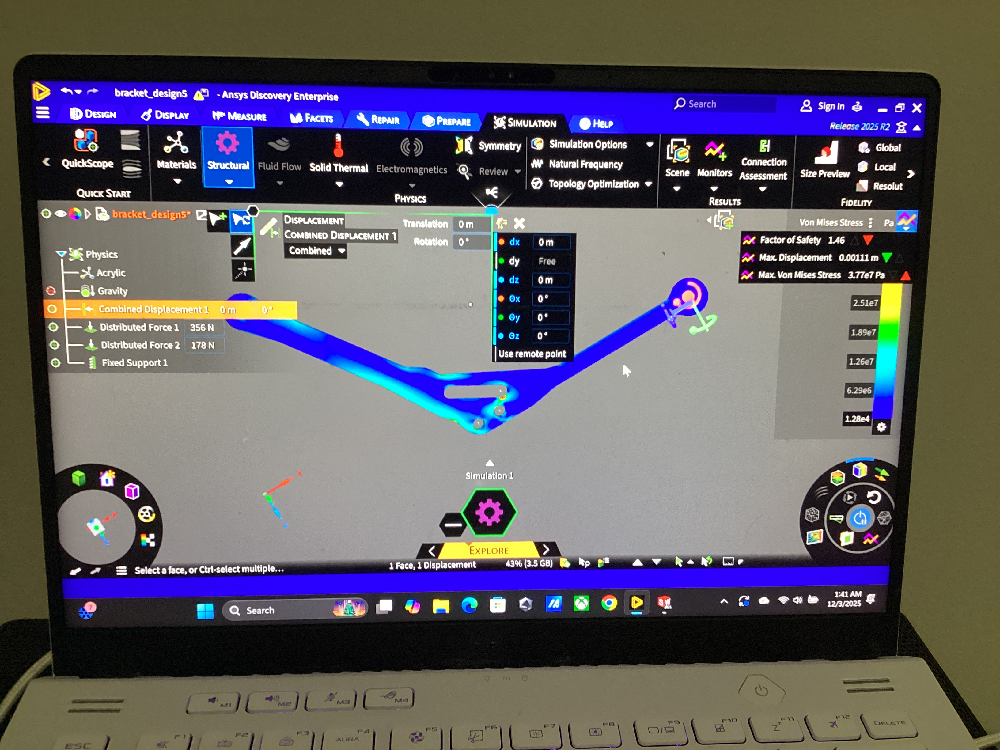
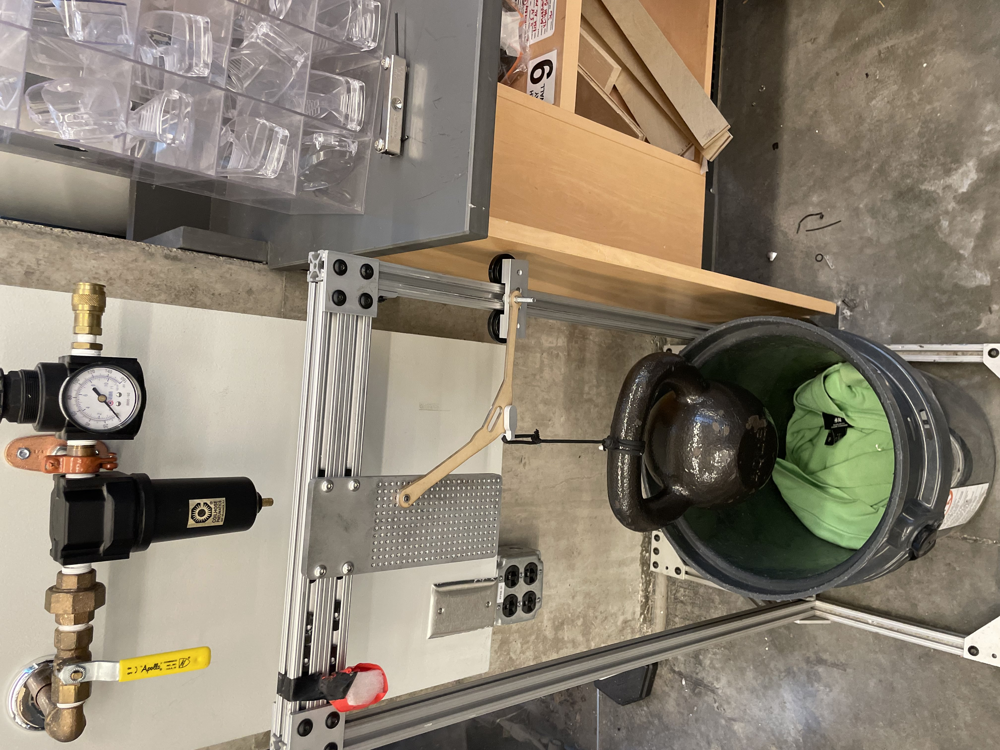

Topology-Optimized Structural Bracket
An 8-inch bracket cut down to under 10 grams that still held a 40-lb load.
What I did
- Iteratively designed and weight-optimized the bracket in SolidWorks under fixed and roller support constraints.
- Validated designs with ANSYS Discovery FEA (von Mises stress, factor of safety 1 to 2).
- Laser-cut acrylic prototypes and load-tested them, converging on a sub-10-gram bracket that supported 40 lb.
How it works
I worked with two teammates on this project. The bracket is held by two supports: a roller support, which only takes a horizontal load, and a pin support, which takes both vertical and horizontal loads. The 40 lb weight hung from a separate bracket that attached through two holes in my bracket.
What went wrong and how I fixed it
The biggest problem I ran into was finding a good initial shape for the bracket before starting topology optimization. At first, I went with a really steep angle without much thought, but over about 20 iterations I noticed patterns that helped us find the best angle. It was really cool seeing that the horizontal-only load at the roller support meant I could cut a large amount of material in that section.
Photos and video

images/bracket.jpg

images/bracket-2.jpg